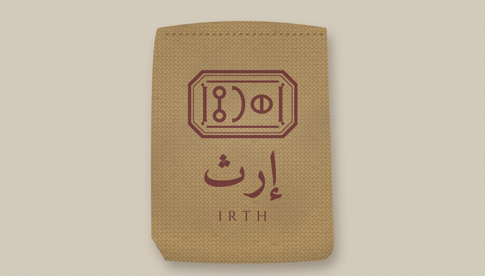
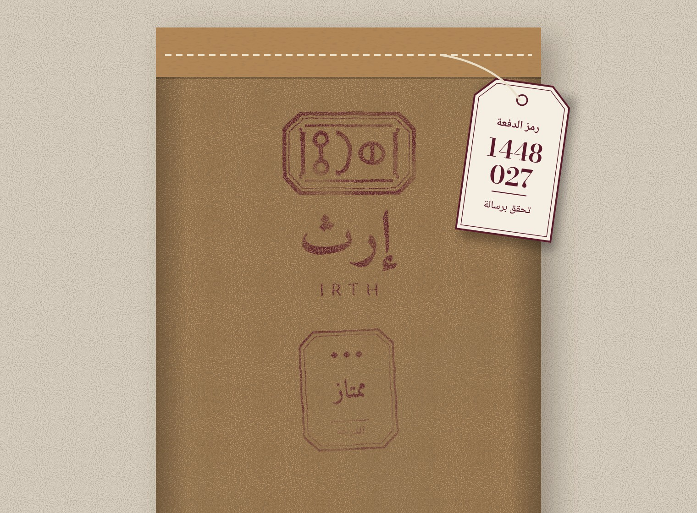

١الشعار الرئيسي بعرض ثلث الوجه تقريباً، في ثلثه الأعلى.
٢شارة الدرجة تحت الشعار، بختم مستقل.
٣ختم الموسم في الركن السفلي، يتجدّد كل موسم.
٤نافذة المنشأ: «بني حشيش · اليمن» ورسم الشَّرعة.
٥ملصق البيانات، كما في ٧٫٤.
٦بطاقة الدفعة مشبوكة في الخياطة.

كيس الخيش · ٢٥ كغ
خيش غذائي خالٍ من الزيوت المعدنية، بشهادة من المورّد على معيار IJO 98/01 أو ما حلّ محله.
بطانة من البولي إيثيلين الغذائي تُغلق قبل الخياطة، فلا يلامس الخيشُ الزبيب.
طباعة شاشة بلون واحد: العنابي 7421 C.

كيس الكرافت · ١٠ كغ
كرافت طبيعي من ثلاث طبقات، وبطانة غذائية من الداخل.
الشعار وشارة الدرجة بختم مطاطي يدوي بالعنابي عند التعبئة.
للتوزيع القريب داخل صنعاء، والشحن البعيد بالكرتون (٧٫٣).
لماذا البطانة؟الزبيب يتشرّب الرطوبة والروائح: فوق ٧٠٪ من الرطوبة يلزق ويتعفّن، وفوق ٢٥ درجة يتسكّر. لذلك البطانة إلزامية في كل عبوة جملة؛ هي التي تحفظ الزبيب، والخيش والكرافت غلافٌ يحمل الهوية.